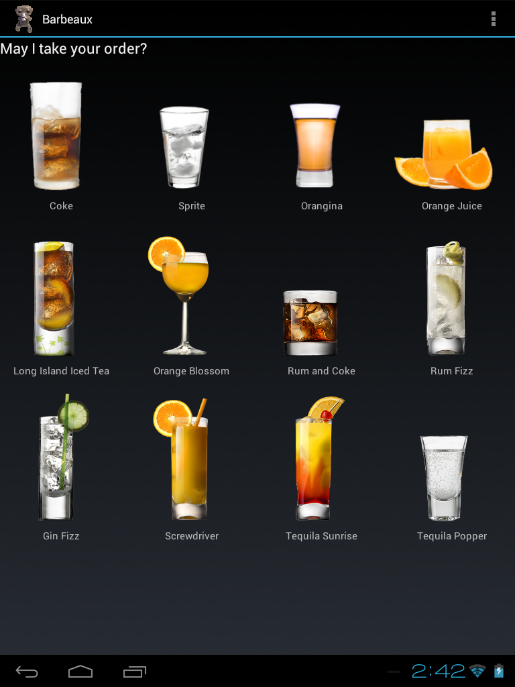
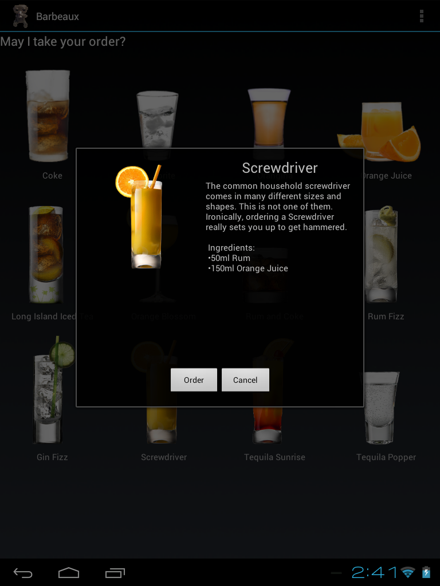
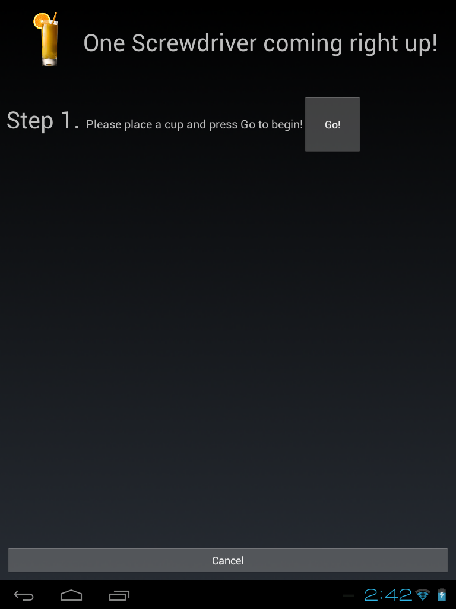

The brave bit-bopping software engineers on the Barbeaux team solved problems worth only of evil geniuses: convince an old tablet to speak with an Arduino and build an Android application to abstract this communication into a beautiful and intuitive interface. The fun part? This tablet did not natively support USB Host, forming serial connections or any of the niceties that the Arduino drivers often supply on the typical slew of PCs.
The software component of this project involved both an Arduino and an Android tablet, as mentioned. Because of the nature of the two systems, each device performed different tasks:
The Barbeaux is fitted with an HP Touchpad running an Android application specifically designed to allow users to select beverages and to act as the true "brain" of the operation, maintaining knowledge of the state of Barbeaux, the position of different beverages and driving communications.
An Arduino microcontroller is embedded invisibly within the Barbeaux in order to communicate with the servos and solenoid valves used to make beverages. In our design, the Arduino is a stateless device with no memory of the state of the system, merely receiving commands from the Android and acting upon them.
Taking an HP Touchpad running the discontinued WebOS, and convincing it to act as a USB host represented an interesting challenge. While most mobile devices use USB to communicate with a desktop PC, the PC acts as the USB host, recognizing the device and providing the drivers required to interface with the device. On the HP Touchpad? No such luck.
The solution? Rebuild, retest and retest again. Luckily, the HP Touchpad is fairly flexibile, fundamentally running an ARM linux kernel. As with most hacks these days, the solution was to then convince the device to run Android, opting for the common Cyanogen Mod port of Android. After installing Android, the process of exploring the intricacies of kernel modules continued; after trying a number of different kernels, compiling more than a fair share of modules and bricking the device multiple times, we were able to compile and load a kernel which supported USB Host, solving about half of the problem
Now able to communicate with generic USB devices, such as old keyboards and mice, we were able to approach the Arduino and begin a conversation.
Building off of an amazing open source Android application, Arduino Communicator, we were able to quickly get started commnicating with the Arduino. As with any open source project, we hd a few interesting hurdles, specifically around line encodings and recognizing the newer Arduino Uno Rev3.
Without Arduino's serial drivers able to handle opening a serial communication line, and configuring the Arduino and the host to pass messages using the same encoding scheme, we had the pleasure of convincing the two devices to play nice, refreshing our knowledge of hex and learning about USB control commands.
// Arduino USB serial converter setup // Set control line state mUsbConnection.controlTransfer(0x21, 0x22, 0, 0, null, 0, 0); // Set line encoding. mUsbConnection.controlTransfer(0x21, 0x20, 0, 0, getLineEncoding(9600), 7, 0);
The application itself has three main pages: the menu page, the drink biography page and the ordering drink page.
When first loaded, the user is shown the order page, from which they can select any beverage to order. The page aims to display the beverages in a graphically interesting way, enticing users to order.
When first loaded, the user is shown the order page, from which they can select any beverage to order. The page aims to display the beverages in a graphically interesting way, enticing users to order.
When first loaded, the user is shown the order page, from which they can select any beverage to order. The page aims to display the beverages in a graphically interesting way, enticing users to order.
{kind=link}
{kind=link}
{kind=link}